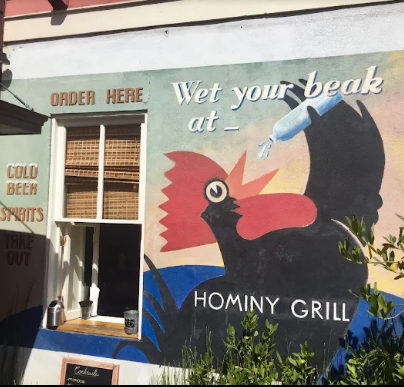

Top Places to Try Shrimp & Grits

Page’s Okra Grill
One of Charleston’s most beloved spots for shrimp & grits, known for grit cakes and andouille cream sauce — a local favorite.

Slightly North of Broad (SNOB)
A Charleston classic with rich shrimp & grits on the menu — a must-visit for locals and visitors alike.

Hominy Grill (Legendary)(Now Closed)
Though currently closed, Hominy Grill’s shrimp & grits helped define Charleston’s Lowcountry cuisine under Chef Robert Stehling, a James Beard award–winning chef.